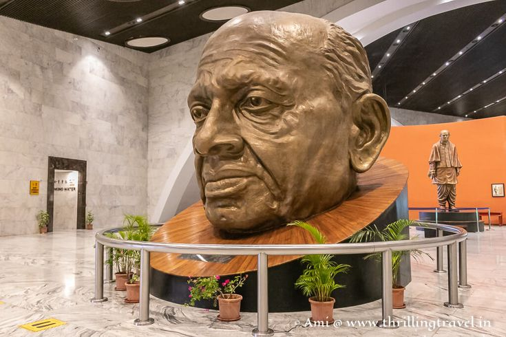
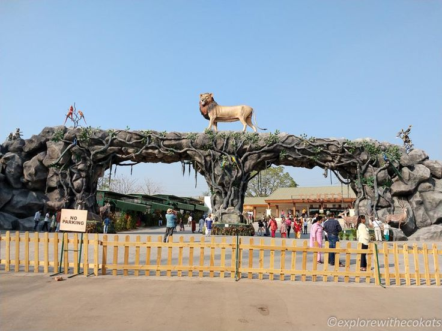
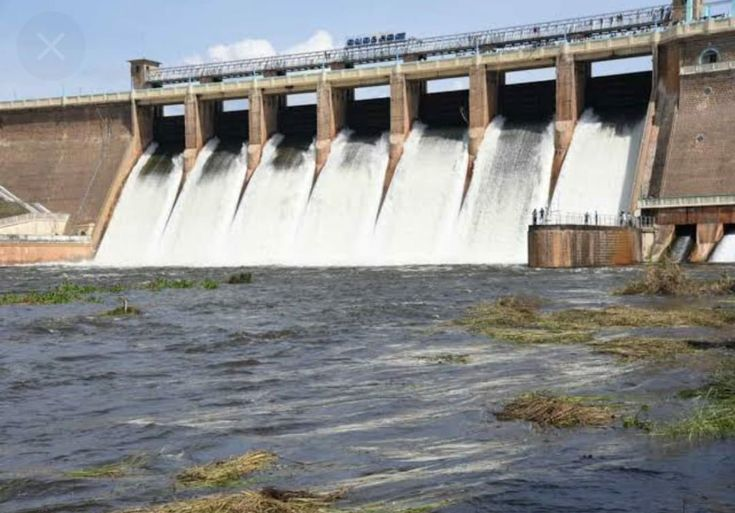

Standing Tall: A Family Road Trip to the Statue of Unity
.jpeg)
Introduction
Visiting the world's tallest statue is an experience in itself, but going there with family makes it even more special. Located just 50 km from my home, the Statue of Unity—a tribute to the Iron Man of India, Sardar Vallabhbhai Patel—was our destination for a perfect weekend getaway.
The Journey: Morning Vibes
We wanted to beat the rush, so we started our day early. We left home at 6:00 AM sharp. The drive was smooth and enjoyable. Since we took our own car, we had the freedom to enjoy the journey at our own pace. The cool morning breeze and the excitement of the trip set the perfect mood.
Arrival & Seamless Connectivity
Upon reaching Kevadia, we parked our car in the designated parking zone. Private vehicles are restricted beyond a certain point to manage traffic and pollution, so we switched to the facility's bus service.
Tip: Buying entry passes at the gate is easy, but reaching early helps avoid long queues.
The Main Attraction: Inside the Giant
After a quick but thorough security check, we finally entered the main complex. Standing at the foot of the statue gives you a sense of how massive it truly is.
The highlight was definitely going inside the statue. High-speed elevators took us up, offering a view that I will never forget. Witnessing the engineering marvel from within was a proud moment.
Nature & Wildlife: Jungle Safari and The Dam
The trip wasn't just about concrete and steel; it was about nature too.
Jungle Safari
We explored the Jungle Safari, which is beautifully maintained and houses various species of animals and birds. It’s a great spot for photography and nature lovers.
Sardar Sarovar Dam
Later, we visited the massive Sardar Sarovar Dam. Seeing the vast expanse of water against the backdrop of the mountains was incredibly soothing.
Food & Final Thoughts
No family trip is complete without good food! After a long day of walking and exploring, we sat down for some snacks and a hearty meal.
We returned home with tired feet but happy hearts. It was a day of full enjoyment and quality time with my family.